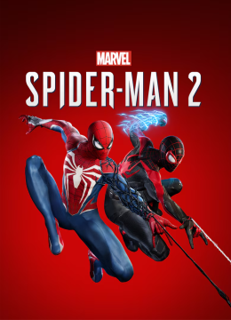
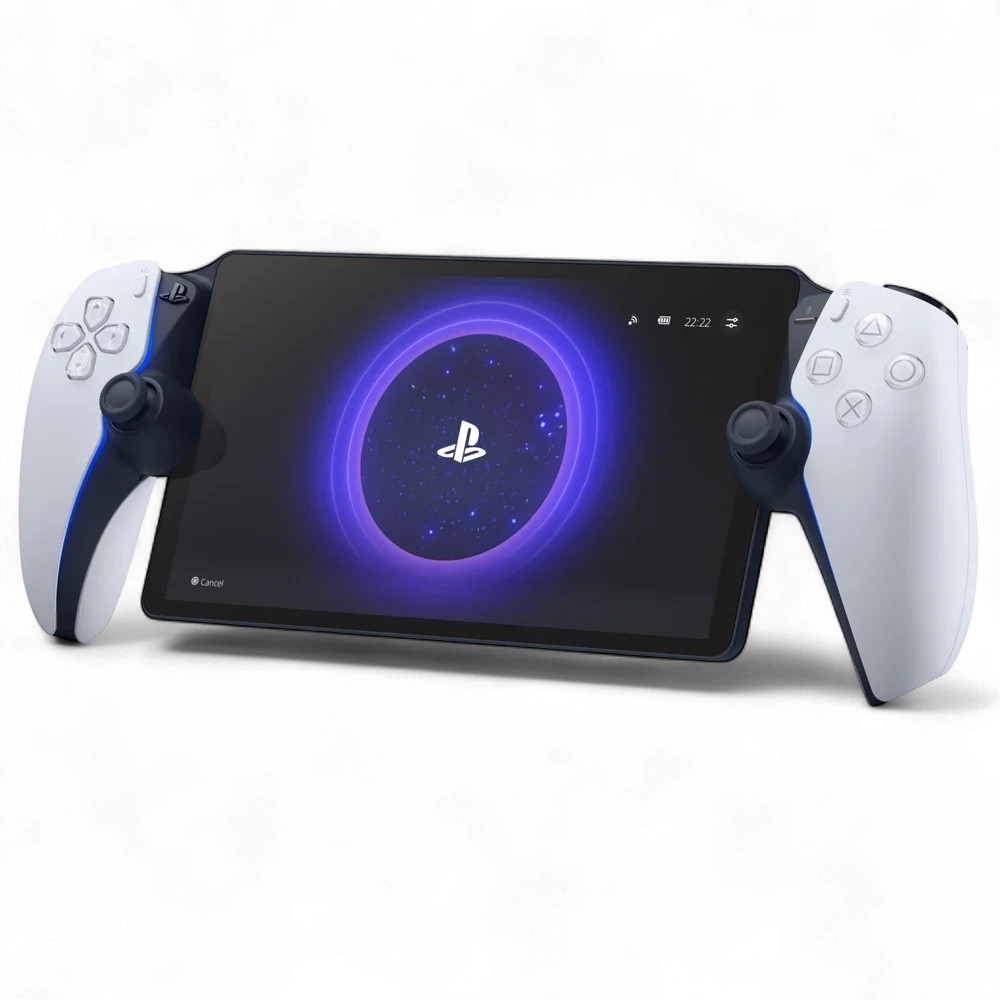
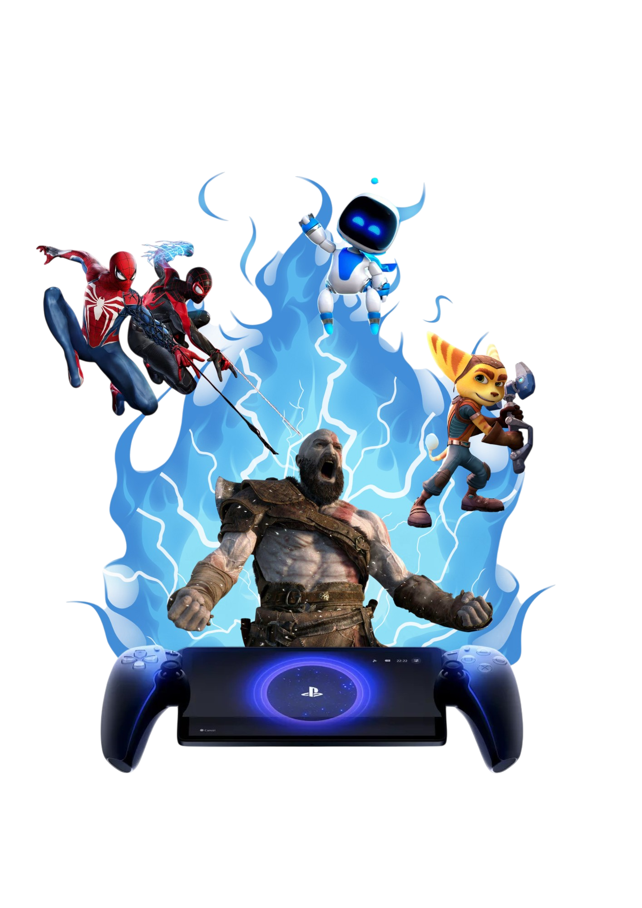

PlayStation Portal
Jogue seu PS5
Jogue seu PS5
em qualquer lugar
Experimente uma nova forma de jogar com o portátil da Sony, mantendo toda a imersão do DualSense.
Conhecer produto
Remote Play
Seu PS5 na palma da mão
O PlayStation Portal permite acessar seus jogos instalados no PS5 através de uma conexão Wi-Fi, criando uma experiência prática, moderna e imersiva.
8"
Tela LCD Full HD
60fps
Gameplay fluido
PS5
Conexão remota

Biblioteca PS5
Seus jogos favoritos continuam com você
Com o PlayStation Portal, a experiência do PS5 acompanha sua rotina, permitindo jogar com conforto em diferentes ambientes da casa.
Spider-Man
Horizon Forbidden
West
Red Dead
Redemption 2
Remote Play
Jogue sem precisar da TV
Com a tecnologia Remote Play, o PlayStation Portal transmite os jogos diretamente do seu PS5 via Wi-Fi, permitindo jogar em diferentes ambientes com praticidade e conforto.
- ✓ Conexão via Wi-Fi
- ✓ Acesso aos jogos instalados no PS5
- ✓ Experiência portátil e imersiva